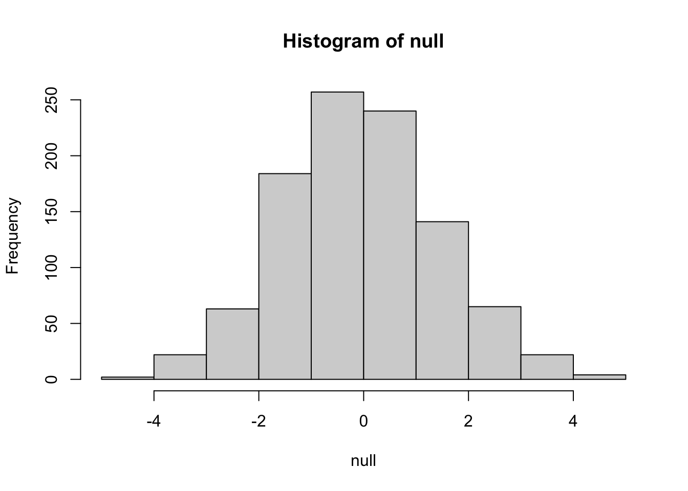
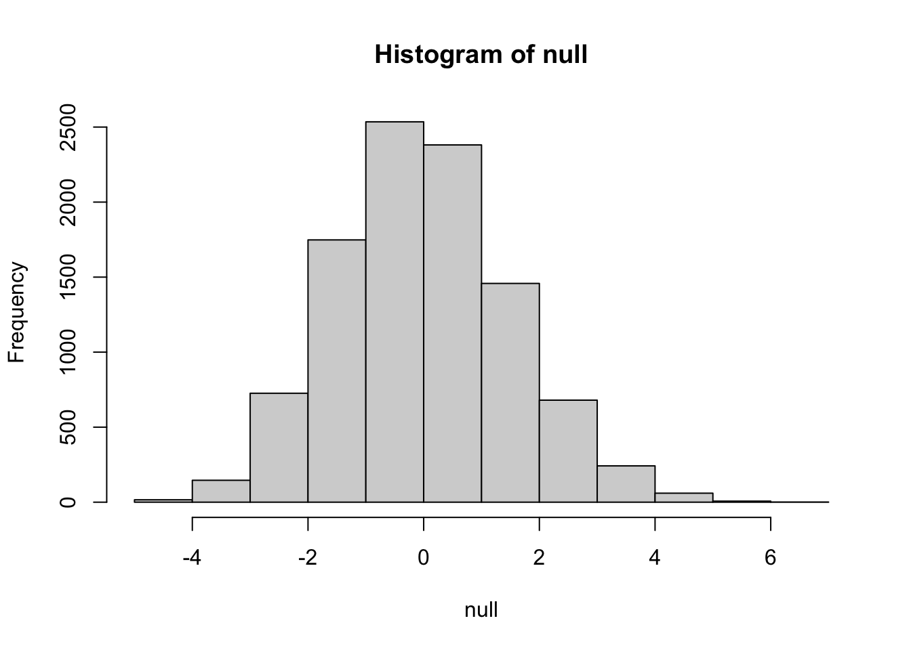
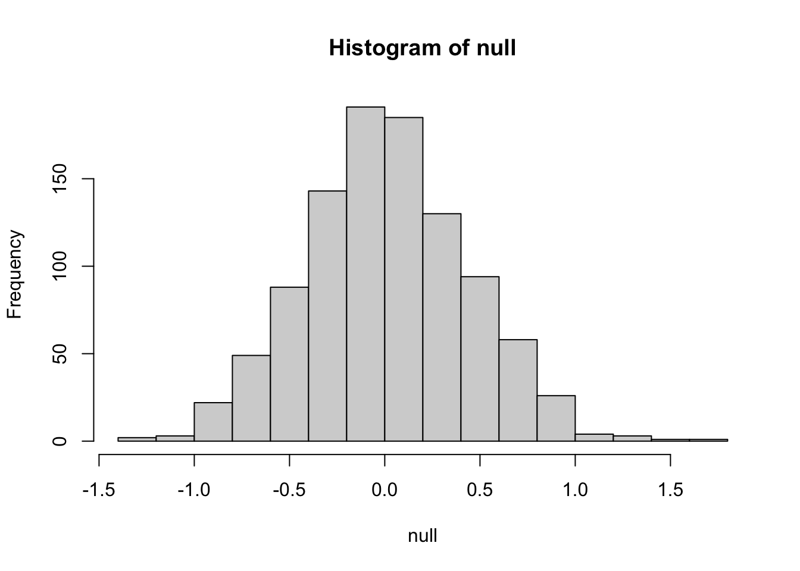
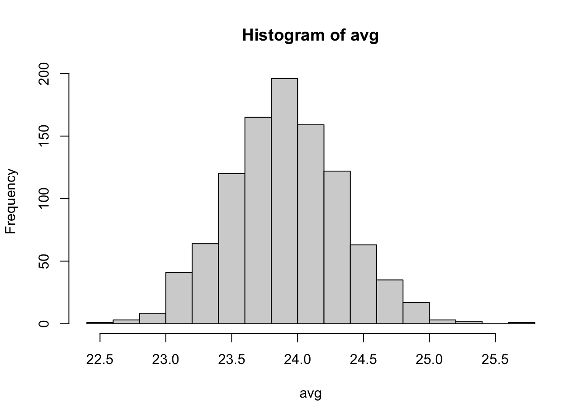
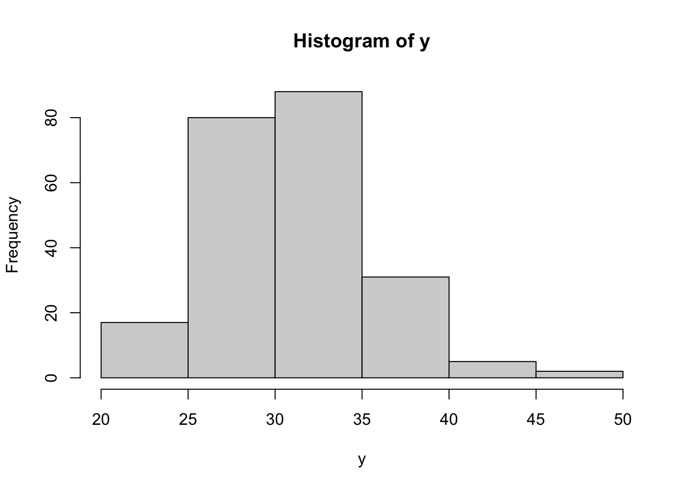
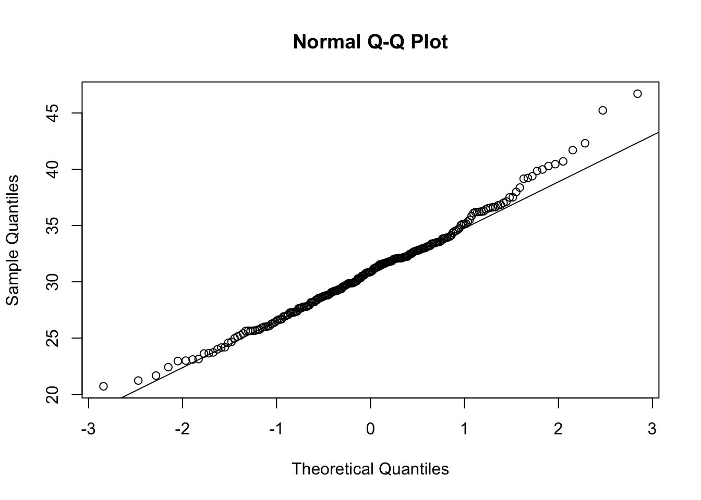
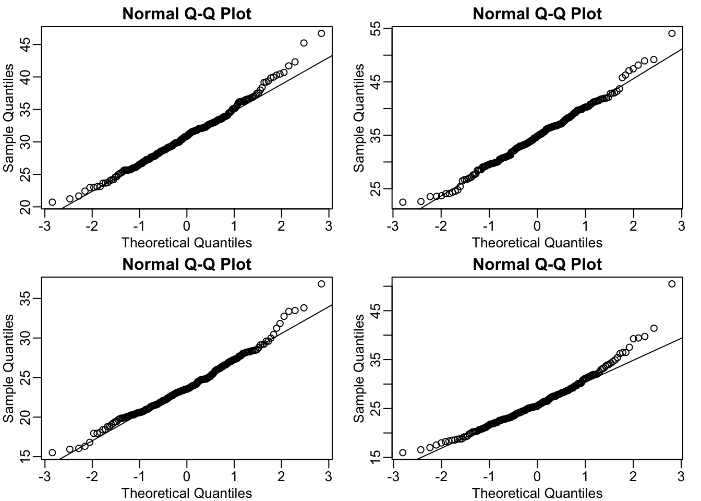
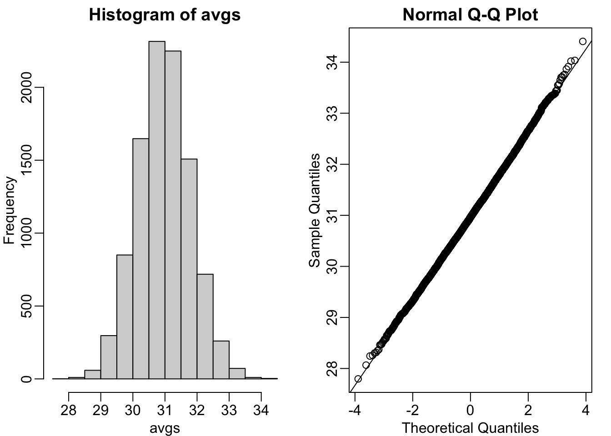
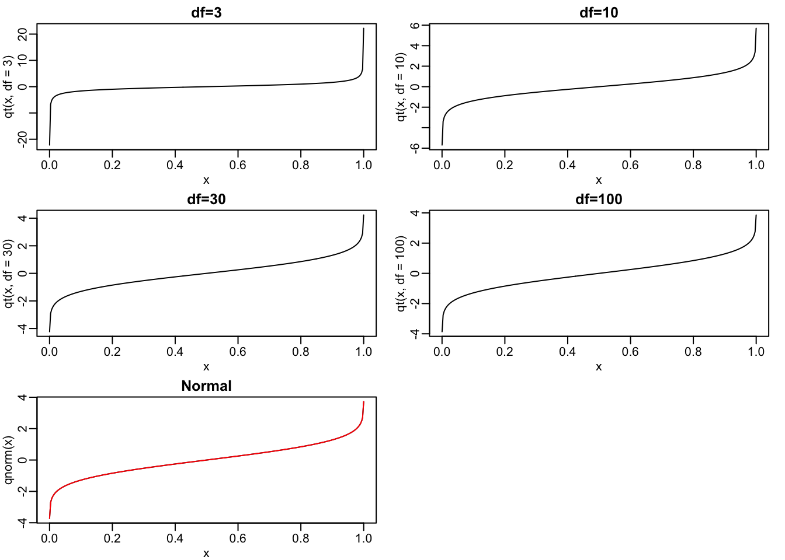

Last updated: 2026-02-12
Checks: 6 1
Knit directory:
Data_Analysis_for_the_Life_Sciences_2015/
This reproducible R Markdown analysis was created with workflowr (version 1.7.2). The Checks tab describes the reproducibility checks that were applied when the results were created. The Past versions tab lists the development history.
The R Markdown file has unstaged changes. To know which version of
the R Markdown file created these results, you’ll want to first commit
it to the Git repo. If you’re still working on the analysis, you can
ignore this warning. When you’re finished, you can run
wflow_publish to commit the R Markdown file and build the
HTML.
Great job! The global environment was empty. Objects defined in the global environment can affect the analysis in your R Markdown file in unknown ways. For reproduciblity it’s best to always run the code in an empty environment.
The command set.seed(20260211) was run prior to running
the code in the R Markdown file. Setting a seed ensures that any results
that rely on randomness, e.g. subsampling or permutations, are
reproducible.
Great job! Recording the operating system, R version, and package versions is critical for reproducibility.
Nice! There were no cached chunks for this analysis, so you can be confident that you successfully produced the results during this run.
Great job! Using relative paths to the files within your workflowr project makes it easier to run your code on other machines.
Great! You are using Git for version control. Tracking code development and connecting the code version to the results is critical for reproducibility.
The results in this page were generated with repository version 66a4a45. See the Past versions tab to see a history of the changes made to the R Markdown and HTML files.
Note that you need to be careful to ensure that all relevant files for
the analysis have been committed to Git prior to generating the results
(you can use wflow_publish or
wflow_git_commit). workflowr only checks the R Markdown
file, but you know if there are other scripts or data files that it
depends on. Below is the status of the Git repository when the results
were generated:
Untracked files:
Untracked: data/mice_pheno.csv
Unstaged changes:
Modified: analysis/01_Inference.Rmd
Deleted: femaleControlsPopulation.csv
Note that any generated files, e.g. HTML, png, CSS, etc., are not included in this status report because it is ok for generated content to have uncommitted changes.
These are the previous versions of the repository in which changes were
made to the R Markdown (analysis/01_Inference.Rmd) and HTML
(docs/01_Inference.html) files. If you’ve configured a
remote Git repository (see ?wflow_git_remote), click on the
hyperlinks in the table below to view the files as they were in that
past version.
| File | Version | Author | Date | Message |
|---|---|---|---|---|
| Rmd | 66a4a45 | hale | 2026-02-11 | Chapter 01 Done |
| html | 66a4a45 | hale | 2026-02-11 | Chapter 01 Done |
| Rmd | b20a326 | hale | 2026-02-11 | Commit changes in Chapter 01 with VSCode |
| html | b20a326 | hale | 2026-02-11 | Commit changes in Chapter 01 with VSCode |
| html | 45a771c | hale | 2026-02-11 | Build site. |
| Rmd | 9e003ce | hale | 2026-02-11 | Start my new project |
For these exercises, we will be using the following dataset:
library(downloader)
url <- "https://raw.githubusercontent.com/genomicsclass/dagdata/master/inst/extdata/femaleControlsPopulation.csv"
filename <- file.path("data", basename(url))
download(url, destfile=filename)
x <- unlist( read.csv(filename) )
write.csv(x, "data/femaleControlsPopulation.csv")Here x represents the weights for the entire population.
mean(x)[1] 23.89338set.seed(1)
sample <- sample(x, 5)
abs(mean(sample) - mean(x))[1] 0.3293778set.seed(5)
sample <- sample(x, 5)
abs(mean(sample) - mean(x))[1] 0.3813778Why are the answers from 2 and 3 different?
Answer: C. Because the average of the samples is a
random variable.
Set the seed at 1, then using a for-loop take a random sample of 5 mice 1,000 times. Save these averages. What percent of these 1,000 averages are more than 1 ounce away from the average of x ?
set.seed(1)
n <- 1000
null <- vector("numeric",n)
for (i in 1:n) {
sample <- sample(x, 5)
null[i] <- mean(sample)- mean(x)
}
mean(null > 1)[1] 0.232hist(null)
| Version | Author | Date |
|---|---|---|
| 66a4a45 | hale | 2026-02-11 |
set.seed(1)
n <- 10000
null <- vector("numeric",n)
for (i in 1:n) {
sample <- sample(x, 5)
null[i] <- mean(sample)- mean(x)
}
mean(null > 1)[1] 0.2448hist(null)
| Version | Author | Date |
|---|---|---|
| 66a4a45 | hale | 2026-02-11 |
Set the seed at 1, then using a for-loop take a random sample of 50 mice 1,000 times. Save these averages. What percent of these 1,000 averages are more than 1 ounce away from the average of x ?
set.seed(1)
n <- 1000
null <- vector("numeric",n)
for (i in 1:n) {
sample <- sample(x, 50)
null[i] <- mean(sample)- mean(x)
}
mean(null > 1)[1] 0.009hist(null)
| Version | Author | Date |
|---|---|---|
| 66a4a45 | hale | 2026-02-11 |
Use a histogram to “look” at the distribution of averages we get
with a sample size of 5 and a sample size of 50. How would you say they
differ?
Answer: B. They both look roughly normal, but with a
sample size of 50 the spread is smaller. When we have more samples, the
difference between the mean of the sample and the mean of the population
is smaller, i.e. we could infer the population mean better with more
samples.
For the last set of averages, the ones obtained from a sample size of 50, what percent are between 23 and 25?
set.seed(1)
n <- 1000
avg <- vector("numeric",n)
for (i in 1:n) {
sample <- sample(x, 50)
avg[i] <- mean(sample)
}
mean(avg > 23 & avg < 25)[1] 0.982hist(avg)
| Version | Author | Date |
|---|---|---|
| 66a4a45 | hale | 2026-02-11 |
pnorm computes the cumulative
distribution function (CDF) of the normal distribution. It calculates
the probability that a value is less than or equal to a given
point.#calculating the probability that values are greater than 23 and 25 separately, rather than the probability that values are between 23 and 25.
# 1 - pnorm(q= c(23,25), mean = 23.9, sd= 0.43)
#correct code
pnorm(q= 25, mean = 23.9, sd= 0.43) - pnorm(q= 23, mean = 23.9, sd= 0.43)[1] 0.9765648The answer to 9 and 10 were very similar. This is because we can approximate the distribution of the sample average with a normal distribution. We will learn more about the reason for this next.
library(downloader)
url <- "https://raw.githubusercontent.com/genomicsclass/dagdata/master/inst/extdata/mice_pheno.csv"
filename <- file.path("data", basename(url))
download(url, destfile=filename)
dat <- read.csv(filename)
dat <- na.omit(dat)
head(dat) Sex Diet Bodyweight
1 F hf 31.94
2 F hf 32.48
3 F hf 22.82
4 F hf 19.92
5 F hf 32.22
6 F hf 27.50library(dplyr)
Attachement du package : 'dplyr'Les objets suivants sont masqués depuis 'package:stats':
filter, lagLes objets suivants sont masqués depuis 'package:base':
intersect, setdiff, setequal, unionm_chow <- dat %>%
filter(Sex == "M", Diet == "chow") %>%
select(Bodyweight) %>%
unlist()
mean(m_chow)[1] 30.96381#install.packages("rafalib")
library(rafalib)
popsd(m_chow)[1] 4.420501set.seed(1)
sample_m_chow <- sample(m_chow,25)
mean(sample_m_chow)[1] 30.5196m_hf <- dat %>%
filter(Sex == "M", Diet == "hf") %>%
select(Bodyweight) %>%
unlist()
mean(m_hf)[1] 34.84793popsd(m_hf)[1] 5.574609set.seed(1)
sample_m_hf <- sample(m_hf,25)
mean(sample_m_hf)[1] 35.8036#abs(abs((mean(y) - mean(x))) - abs((mean(sample_y) - mean(sample_x))))
abs((mean(m_hf) - mean(m_chow)) - (mean(sample_m_hf) - mean(sample_m_chow)))[1] 1.399884#Population average and standard deviation for females mouse on chow diet
library(dplyr)
f_chow <- dat %>%
filter(Sex == "F", Diet == "chow") %>%
select(Bodyweight) %>%
unlist()
mean(f_chow)[1] 23.89338popsd(f_chow)[1] 3.416438#Sample average for 25 females on chow diet
set.seed(1)
sample_f_chow <- sample(f_chow,25)
mean(sample_f_chow)[1] 24.2528#Population average and standard deviation for females mouse on hf diet
library(dplyr)
f_hf <- dat %>%
filter(Sex == "F", Diet == "hf") %>%
select(Bodyweight) %>%
unlist()
mean(f_hf)[1] 26.2689popsd(f_hf)[1] 5.06987#Sample average for 25 females on hf diet
set.seed(1)
sample_f_hf <- sample(f_hf,25)
mean(sample_f_hf)[1] 28.3828abs((mean(f_hf) - mean(f_chow)) - (mean(sample_f_hf) - mean(sample_f_chow)))[1] 1.754483Answer:
- With seed=1, males closer (1.40 < 1.75). Females typically
closer due to lower population SDs.
- Typical correct answer: A. The population variance of the females is
smaller than that of the males; thus, the sample variable has less
variability.
When the sample size is large, the average \(\\bar{Y}\) of a random sample follows a normal distribution centered at the population average µ and with standard deviation equal to the population standard deviation σ, divided by the square root of the sample size N. We refer to the standard deviation of the distribution of a random variable as the random variable’s standard error.
library(downloader)
url <- "https://raw.githubusercontent.com/genomicsclass/dagdata/master/inst/extdata/mice_pheno.csv"
filename <- file.path("data", basename(url))
download(url, destfile=filename)
dat <- na.omit(read.csv(filename))pnorm(q=1, mean=0, sd=1) - pnorm(q=-1, mean=0, sd=1)[1] 0.6826895For the normal distribution: ~68% of values are within 1 SD
pnorm(q=2, mean=0, sd=1) - pnorm(q=-2, mean=0, sd=1)[1] 0.9544997For the normal distribution: ~95% of values are within 2 SDs
pnorm(q=3, mean=0, sd=1) - pnorm(q=-3, mean=0, sd=1)[1] 0.9973002For the normal distribution: ~99.7% of values are within 3 SDs
y <- dat %>%
filter(Sex == "M", Diet == "chow") %>%
select(Bodyweight) %>%
unlist()
mean(y)[1] 30.96381popsd(y)[1] 4.420501hist(y)
pnorm(q= mean(y)+ popsd(y), mean=mean(y), sd= popsd(y)) - pnorm(q= mean(y)- popsd(y), mean=mean(y), sd= popsd(y))[1] 0.6826895For y that approximately follows a normal distribution: ~68% of values are within 1 SD
pnorm(q= mean(y)+ 2*popsd(y), mean=mean(y), sd= popsd(y)) - pnorm(q= mean(y)- 2*popsd(y), mean=mean(y), sd= popsd(y))[1] 0.9544997For y that approximately follows a normal distribution: ~95% of values are within 2 SDs
pnorm(q= mean(y)+ 3*popsd(y), mean=mean(y), sd= popsd(y)) - pnorm(q= mean(y)- 3*popsd(y), mean=mean(y), sd= popsd(y))[1] 0.9973002For y that approximately follows a normal distribution: ~99.7% of values are within 3 SDs
qqnorm(y)
qqline(y)
Answer: C) The mouse weights are well approximated by the normal distribution, although the larger values (right tail) are larger than predicted by the normal. This is consistent with the differences seen between question 3 and 6.
mypar(2,2)
#Male chow
y_m_chow <- dat %>%
filter(Sex == "M", Diet == "chow") %>%
select(Bodyweight) %>%
unlist()
qqnorm(y_m_chow)
qqline(y_m_chow)
#Male hf
y_m_hf <- dat %>%
filter(Sex == "M", Diet == "hf") %>%
select(Bodyweight) %>%
unlist()
qqnorm(y_m_hf)
qqline(y_m_hf)
#Female chow
y_f_chow <- dat %>%
filter(Sex == "F", Diet == "chow") %>%
select(Bodyweight) %>%
unlist()
qqnorm(y_f_chow)
qqline(y_f_chow)
#Female hf
y_f_hf <- dat %>%
filter(Sex == "F", Diet == "hf") %>%
select(Bodyweight) %>%
unlist()
qqnorm(y_f_hf)
qqline(y_f_hf)
Answer: A) The CLT tells us that sample averages are approximately normal.
replicate to
learn about the distribution of random variables. All the above
exercises relate to the normal distribution as an approximation of the
distribution of a fixed list of numbers or a population. We have not yet
discussed probability in these exercises. If the distribution of a list
of numbers is approximately normal, then if we pick a number at random
from this distribution, it will follow a normal distribution. However,
it is important to remember that stating that some quantity has a
distribution does not necessarily imply this quantity is random. Also,
keep in mind that this is not related to the central limit theorem. The
central limit applies to averages of random variables. Let’s explore
this concept.We will now take a sample of size 25 from the population of males on the chow diet. The average of this sample is our random variable. We will use the replicate to observe 10,000 realizations of this random variable. Set the seed at 1, generate these 10,000 averages. Make a histogram and qq-plot of these 10,000 numbers against the normal distribution. We can see that, as predicted by the CLT, the distribution of the random variable is very well approximated by the normal distribution.
set.seed(1)
y <- filter(dat, Sex=="M" & Diet=="chow") %>% select(Bodyweight) %>% unlist
avgs <- replicate(10000, mean(sample(y, 25)))
mypar(1,2)
hist(avgs)
qqnorm(avgs)
qqline(avgs)
What is the average of the distribution of the sample average?
mean(avgs)[1] 30.96856sd(avgs)[1] 0.8271233popsd(y)/sqrt(25)[1] 0.8841001set.seed(1)
y <- dat %>% filter(Sex=="M" & Diet=="chow") %>% select(Bodyweight) %>% unlist
sds <- replicate(10000, sd(sample(y, 25)))
mean(sds < 3.5)[1] 0.0942x <- seq(0.0001,0.9999,len=300)
mypar(3,2)
plot(x, qt(x, df=3), type="l", main="df=3")
plot(x, qt(x, df=10), type="l", main="df=10")
plot(x, qt(x, df=30), type="l", main="df=30")
plot(x, qt(x, df=100), type="l", main="df=100")
plot(x, qnorm(x), type="l", main="Normal")
lines(x, qnorm(x), col="red")
Answer: C) The t-distribution has larger tails up until 30 degrees of freedom, at which point it is practically the same as the normal distribution.
sessionInfo()R version 4.4.2 (2024-10-31)
Platform: aarch64-apple-darwin20
Running under: macOS Sequoia 15.6.1
Matrix products: default
BLAS: /Library/Frameworks/R.framework/Versions/4.4-arm64/Resources/lib/libRblas.0.dylib
LAPACK: /Library/Frameworks/R.framework/Versions/4.4-arm64/Resources/lib/libRlapack.dylib; LAPACK version 3.12.0
locale:
[1] C/UTF-8/C/C/C/C
time zone: Europe/Paris
tzcode source: internal
attached base packages:
[1] stats graphics grDevices utils datasets methods base
other attached packages:
[1] rafalib_1.0.4 dplyr_1.1.4 downloader_0.4.1 workflowr_1.7.2
loaded via a namespace (and not attached):
[1] jsonlite_2.0.0 compiler_4.4.2 promises_1.3.3 tidyselect_1.2.1
[5] Rcpp_1.1.0 stringr_1.5.1 git2r_0.36.2 callr_3.7.6
[9] later_1.4.2 jquerylib_0.1.4 yaml_2.3.10 fastmap_1.2.0
[13] R6_2.6.1 generics_0.1.4 knitr_1.50 tibble_3.3.0
[17] rprojroot_2.1.0 RColorBrewer_1.1-3 bslib_0.9.0 pillar_1.11.0
[21] rlang_1.1.6 cachem_1.1.0 stringi_1.8.7 httpuv_1.6.16
[25] xfun_0.52 getPass_0.2-4 fs_1.6.6 sass_0.4.10
[29] cli_3.6.5 withr_3.0.2 magrittr_2.0.3 ps_1.9.1
[33] digest_0.6.37 processx_3.8.6 rstudioapi_0.17.1 lifecycle_1.0.4
[37] vctrs_0.6.5 evaluate_1.0.4 glue_1.8.0 whisker_0.4.1
[41] rmarkdown_2.29 httr_1.4.7 tools_4.4.2 pkgconfig_2.0.3
[45] htmltools_0.5.8.1